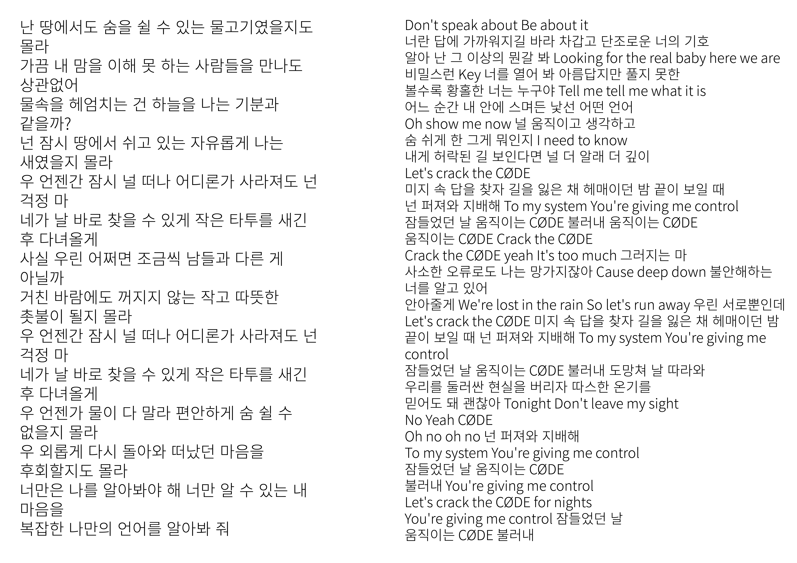
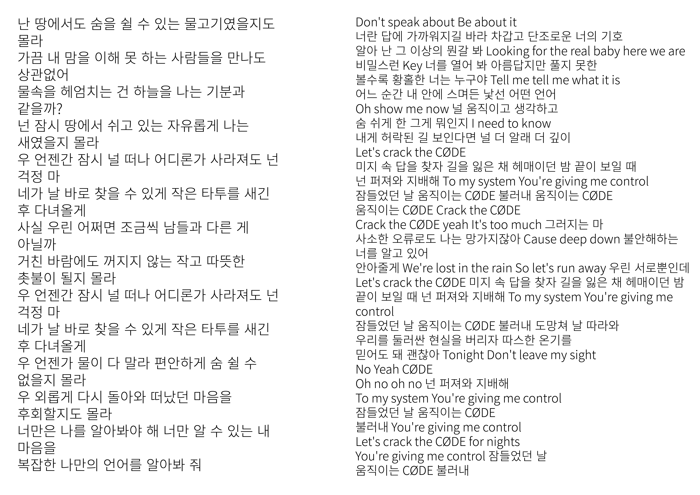

2023
[k-pop lyric poster]
rgb printing
594 * 841
2개 이상의 K-Pop 가사를 시각 재료로 사용해
컬러 포스터(A2) 1장을 디자인했던 작업입니다.
노래는 백예린의 물고기, 샤이니의 코드를 선택해 작업했습니다.
두 곡이 공유하는 ‘언어’라는 단어에 집중하여 노래 가사를 통해 관통하는 지점을 해석했고,
서로가 공유하는 각자의 언어를 통해 서로를 찾아가는 과정이라고 이해했습니다.
이를 시각적으로 표현하기 위해 실을 직접 스캔하여 그래픽 재료로 활용하였고,
가사를 모스 부호화하였습니다.
또한 문장과 단어를 왜곡하거나 분절하여 의도적으로 읽기 어렵게 만들었습니다.
추가적으로 GIF 애니메이션 작업을 통해 작업물의 의도를 극대화했습니다.


 

♩listen to the songs(ᵕ ᵕ)♩
gif ~ (๑ - ⩊ - )
trigger object
♩lyrics♩